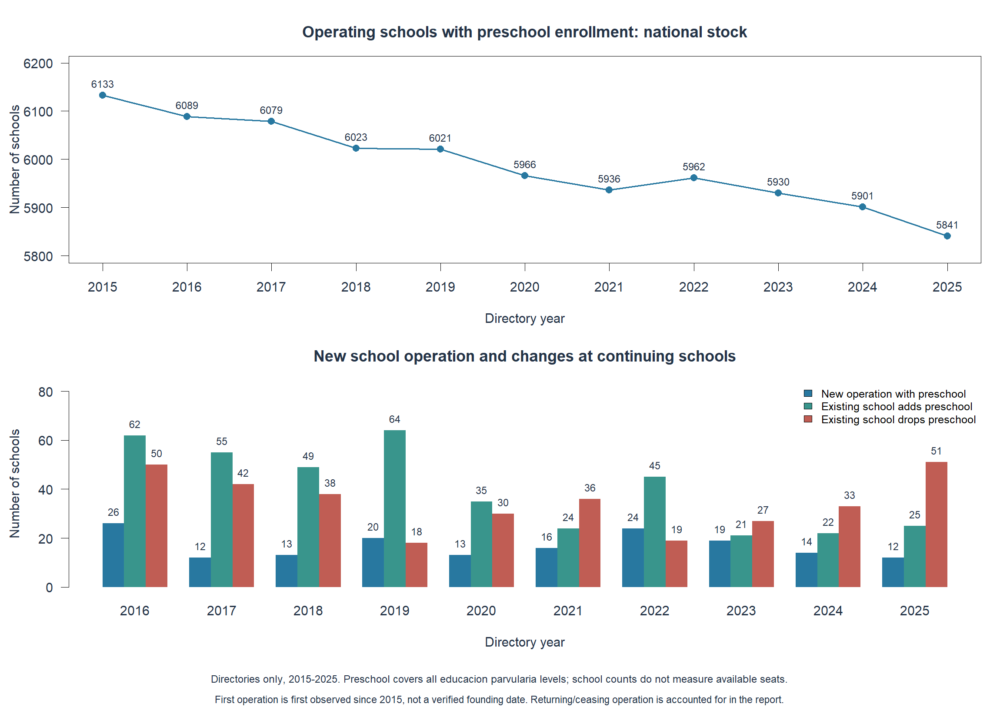

School directories only: preschool provision and school entry, 2015-2025
All years are annual directory snapshots. No SAE data, participation restrictions, or process-year definitions enter this exercise.
The directories do not provide a consistent annual series of kinder capacity or available seats. They support school counts and changes in observed preschool enrollment status. The earlier greater-than-10-seat calculation cannot be performed from these directories alone.

Exact accounting of the change in preschool school numbers
| Year | First school operation: all | Of these: preschool | Existing schools add preschool | Returning schools with preschool | Existing schools drop preschool | Preschool schools cease observed operation | Net preschool school change | Active preschool schools |
|---|---|---|---|---|---|---|---|---|
| 2016 | 83 | 26 | 62 | 0 | 50 | 82 | -44 | 6089 |
| 2017 | 35 | 12 | 55 | 7 | 42 | 42 | -10 | 6079 |
| 2018 | 28 | 13 | 49 | 4 | 38 | 84 | -56 | 6023 |
| 2019 | 38 | 20 | 64 | 7 | 18 | 75 | -2 | 6021 |
| 2020 | 42 | 13 | 35 | 2 | 30 | 75 | -55 | 5966 |
| 2021 | 33 | 16 | 24 | 16 | 36 | 50 | -30 | 5936 |
| 2022 | 41 | 24 | 45 | 9 | 19 | 33 | 26 | 5962 |
| 2023 | 35 | 19 | 21 | 9 | 27 | 54 | -32 | 5930 |
| 2024 | 25 | 14 | 22 | 4 | 33 | 36 | -29 | 5901 |
| 2025 | 23 | 12 | 25 | 6 | 51 | 52 | -60 | 5841 |
First operation with preschool + additions at continuing operating schools + returning operations with preschool - drops at continuing schools - preschool schools ceasing observed operation equals the net annual change exactly. Baseline 2015 has 6133 operating preschool schools.
Definitions and data limits
- Operating means ESTADO_ESTAB=1 and MATRICULA=1. Preschool means at least one ENS teaching code=10. Both conditions are required for the active preschool stock. ENS=10 covers all educacion parvularia levels, including nursery/middle levels, pre-kinder and kinder; it cannot isolate kinder.
- First observed operation is the first operating/enrollment record in the available 2015-2025 history. It is a candidate opening, not a verified legal founding date. The left-censored 2015 baseline has no creation count. Identifier changes and operation before the baseline remain possible.
- An existing school adds/drops preschool when it operates in both adjacent years and its preschool enrollment flag changes. Addition need not mean first-ever provision; it can reintroduce preschool. It does not quantify places or classrooms.
- Returning operation requires an earlier operating observation, no operation in the preceding year, and current operation with preschool. Ceasing observed operation includes directory absence or failure of the operating-with-enrollment condition and does not establish permanent closure.
- MAT_TOTAL, available from 2022, is whole-school enrollment, not capacity. MAT_ENS fields appear in 2025, preventing a consistent preschool enrollment-change series. Neither is substituted for available seats.
- School-level records and the complete exact accounting are saved locally. A separate audit retains preschool flags not satisfying operating/enrollment status; these do not enter the active stock.
Downloads: annual accounting; first-operation school list; preschool status changes; figure PDF.